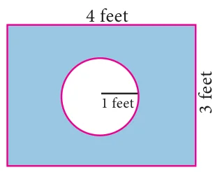

Write the sample space for tossing three coins using tree diagram.
Write the sample space for selecting two balls at a time from a bag containing 6 balls numbered 1 to 6 (using tree diagram).
If \(A\) is an event of a random experiment such that \(P(A) : P(\overline{A}) = 17 : 15\) and \(n(S) = 640\) then find (i) \(P(\overline{A})\) (ii) \(n(A)\).
A coin is tossed thrice. What is the probability of getting two consecutive tails?
At a fete, cards bearing numbers 1 to 1000, one number on one card are put in a box. Each player selects one card at random and that card is not replaced. If the selected card has a perfect square number greater than 500, the player wins a prize. What is the probability that (i) the first player wins a prize (ii) the second player wins a prize, if the first has won?
A bag contains 12 blue balls and \(x\) red balls. If one ball is drawn at random (i) what is the probability that it will be a red ball? (ii) If 8 more red balls are put in the bag, and if the probability of drawing a red ball will be twice that of the probability in (i), then find \(x\).
Two unbiased dice are rolled once. Find the probability of getting
a doublet (equal numbers on both dice)
the product as a prime number
the sum as a prime number
the sum as 1
Three fair coins are tossed together. Find the probability of getting
all heads
atleast one tail
atmost one head
atmost two tails
A bag contains 5 red balls, 6 white balls, 7 green balls, 8 black balls. One ball is drawn at random from the bag. Find the probability that the ball drawn is
white
black or red
not white
neither white nor black
In a box there are 20 non-defective and some defective bulbs. If the probability that a bulb selected at random from the box found to be defective is \(\dfrac{3}{8}\) then, find the number of defective bulbs.

Some boys are playing a game, in which the stone thrown by them landing in a circular region (given in the figure) is considered as win and landing other than the circular region is considered as loss. What is the probability to win the game? \((\pi = 3.14)\)
Two customers Priya and Amuthan are visiting a particular shop in the same week (Monday to Saturday). Each is equally likely to visit the shop on any one day as on another day. What is the probability that both will visit the shop on
the same day
different days
consecutive days?
In a game, the entry fee is ₹150. The game consists of tossing a coin 3 times. Dhana bought a ticket for entry. If one or two heads show, she gets her entry fee back. If she throws 3 heads, she receives double the entry fees. Otherwise she will lose. Find the probability that she (i) gets double entry fee (ii) just gets her entry fee (iii) loses the entry fee.